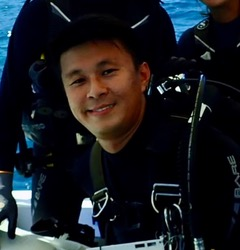

|  | Lionel NG
PhD Candidate, Department of Biological Sciences (2016 - 2021)
|
Research Interests
Coral reef rehabilitation, coral reef ecology, environmental management
Current Research
Coral reefs are threatened and declining rapidly due to a myriad of stressors. Restoration can assist in improving the resilience of these ecosystems, but such efforts can be costly and hindered by resource limitations. My research focuses on the functional characterization of corals in Singapore. Using a trait-based approach, species that contribute more to reinstating the functions and ecological value of degraded reef areas can be identified, thus facilitating the formulation of more effective restoration strategies.
Academic & Employment History
Ph.D. (Biology), National University of Singapore: 2016 – 2021
M.Sc. (Environmental Management), National University of Singapore: 2013 – 2015
B.Sc. (2nd Class Honours) in Life Sciences (Concentration in Biology), National University of Singapore: 2004 - 2008
Research Assistant, National University of Singapore: 2012 – 2014 (Department of Biological Sciences); 2008 - 2012, 2014 - 2016 (Tropical Marine Science Institute)
Recent Awards & Grants
Best Student Oral Presentation - 4th Asia Pacific Coral Reef Symposium (2018)
Best Oral Presentation - 2nd runner-up (21st Biological Sciences Graduate Conference, 2016)
NUS Research Scholarship (2016)
Shell Best Dissertation Award (2015)
Wildlife Reserves Singapore Conservation Fund (2014; Co-PI Prof Chou Loke Ming)
Recent Publications
(further details in https://scholar.google.com.sg/citations?user=jLoo9bYAAAAJ&hl=en)
Chou LM, Ng CSL, Toh KB, Cheo PR, Ng JY, Tun K. (2020). Hidden Havens: Exploring Marine Life in Singapore’s Marinas. National Parks Board, Singapore. 103 pp. (e-book at https://www.nparks.gov.sg/learning/teaching-and-learning-resources/recommended-books/hidden-havens-exploring-marine-life-in-singapore%27s-marinas)Ng CSL, Huang D, Toh KB, Sam SQ, Kikuzawa YP, Toh TC, Taira D, Chan YKS, Hung LZT, Sim WT, Rashid AR, Afiq-Rosli L, Ng NK, Chou LM (2020). Responses of urban reef corals during the 2016 mass bleaching event. Marine Pollution Bulletin, 154: 111111. https://doi.org/10.1016/j.marpolbul.2020.111111
Ng CSL, Lim JX, Sam SQ, Kikuzawa YP, Toh TC, Wee TW, Sim WT, Ng NK, Huang D, Chou LM. 2019. Variability in skeletal bulk densities of common hard corals in Southeast Asia. Coral Reefs 38: 1133–1143. https://doi.org/10.1007/s00338-019-01852-2
Ng CSL, Jan SS, Nguyen NTH, Sam SQ, Kikuzawa YP, Chou LM, Huang D. 2019. New genus and species record of reef coral Micromussa amakusensis in the southern South China Sea. Marine Biodiversity Records 12:17
Chou LM, Toh TC, Kikuzawa YP, Loke HX, Ng CSL, Sam SQ, Afiq-Rosli L, Toh KB, Taira D, Poquita-Du RC. 2019. Re-fragmentation of the coral Echinopora lamellosa (Esper 1795) for mariculture. The Asian Conference on Sustainability, Energy & the Environment 2019 Official Conference Proceedings p. 9-19
Contributions to “Private Lives – An Exposé of Singapore’s Coral Reefs”. Lee Kong Chian Natural History Museum, Singapore. Chou LM, Huang D, Jaafar Z, Toh TC, K Tun (eds)
a. Ng CSL, Wee TWD. 2019. Skeletal secrets. p. 21-23.
b. Toh TC, Ng CSL. 2019. What is physical restoration? P. 164-165
c. Toh TC, Ng CSL. 2019. What is biological restoration? P. 166-167
d. Ng CSL, Tan KS. 2019. Gardening Singapore’s seawalls P. 169
Wee SYC, Sam SQ, Sim WT, Ng CSL, Taira D, Afiq-Rosli L, Kikuzawa YP, Toh TC, Chou LM. 2019. The role of in situ coral nurseries in supporting mobile invertebrate epifauna. Journal of Nature Conservation 50: 125710
Ng CSL, Toh KB, Toh TC, Ng JY, Cheo PR, Tun K, Chou LM. 2019. Distribution of soft bottom macrobethic communities in tropical marinas of Singapore. Urban Ecosystems 22(3): 443–453. https://doi.org/10.1007/s11252-019-0828-4
Tan HH, Ng CSL. 2019. Starry triggerfish from Sentosa. Singapore Biodiversity Records 2019: 36
Afiq-Rosli L, Huang D, Toh TC, Taira D, Ng CSL, Song T, Chou LM. 2019. Maximising genetic diversity during coral transplantation from a highly impacted source reef. Conservation Genetics. https://doi.org/10.1007/s10592-019-01164-6